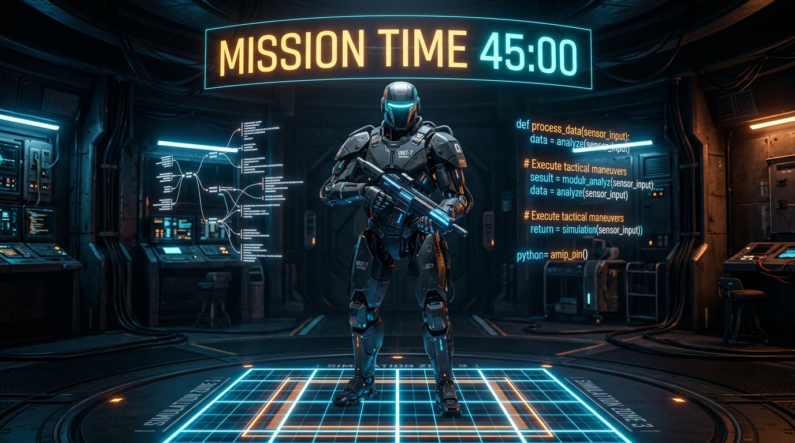

MISSION CAMPAIGN // W1-W5 核心全解密
PYTHON 特務：滿分計畫
針對國立臺灣大學「程式設計與網路資料搜集」期中考研發！機械巨蟒盤踞主控台，帶你徹底攻克 I/O 格式化、ASCII 編碼演算、串列記憶體淺拷貝、巢狀迴圈與可變預設參數陷阱。

ARENA OVERSEER // UNIT-7
EXAM SIMULATION // TARGET DRIVEN
期中實戰刷題考場
突破章節局限，全真計時高壓演練！戰術機甲哨兵即時監控作答時間與解題精準度，全面訓練臨場代碼追蹤直覺與破題敏銳度。
50 分鐘急速模考
仿 114-1 期中試卷規格
隨機抽取 25 題跨章節題目，嚴格計時 50 分鐘，考驗第一時間破題與敏銳度。
全真深度模擬考
仿 114-2 (120分/大題量)
抽取 40 題全方位混合題庫，計時 120 分鐘。全面涵蓋巢狀迴圈與記憶體參照魔王題。
10 題快速突擊
5 分鐘碎片化刷題
隨機抽取 10 題快節奏速刷，適合搭車、課間或考前 10 分鐘迅速喚醒題感。
高頻陷阱突擊
專攻最高失分率題目
匯總所有進階難度的陷阱題（可變引數、切片賦值、Scope 遮蔽），正面擊破難點！
50 分鐘模考
進度：1 / 25
49:59
特務錯題情報庫
系統自動收集歷次闖關與模考答錯的題目。在此重新答對即可消滅錯題！
依六大特務作戰能力維度篩選：
特務能力分析與六維戰力雷達
系統即時計算各能力維度答對率，藉由六邊形多邊形精準勾勒戰術優勢與待加強弱點。
總答題數
0
平均正確率
0%
最高連擊 (Combo)
0
累積獲得星級
0 / 36
特務戰力六邊形多邊形雷達圖
維度：語法、字串、容器、迴圈、函式、解析式
外圈 100% 掌握
作戰戰力即時診斷
最強戰術優勢領域
--
尚在累積作戰數據，請進行測驗以解鎖診斷。
核心加強脆弱防線
--
尚在累積作戰數據，請進行測驗以解鎖診斷。